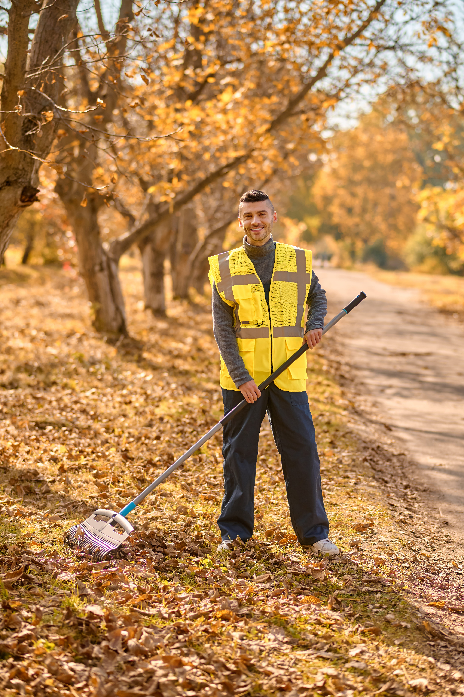

¡Es hora de actuar por nuestro planeta! 🌎💚
Estás invitado a participar en una jornada especial de limpieza del carril bici de Puertollano,
un evento comunitario donde nos uniremos para recoger residuos,
cuidar nuestro entorno y concienciar sobre la importancia de mantener limpios
nuestros espacios naturales.
¿Cómo participar?
✅ Ven con ganas de ayudar – No necesitas experiencia, solo motivación.
✅ Trae guantes reutilizables y bolsas reciclables, si puedes (también proporcionaremos material).
✅ Invita a amigos y familiares – ¡Cuantos más seamos, mayor impacto lograremos!
🎟️ Actividad gratuita y abierta a todos.
💡 Juntos podemos marcar la diferencia. ¡Súmate al cambio y ayúdanos a limpiar Puertollano!
📅 Fecha: 24 de mayo de 2025
🕛 Horario: Desde las 10:30
📍 Lugar: Carril Bici de Puertollano